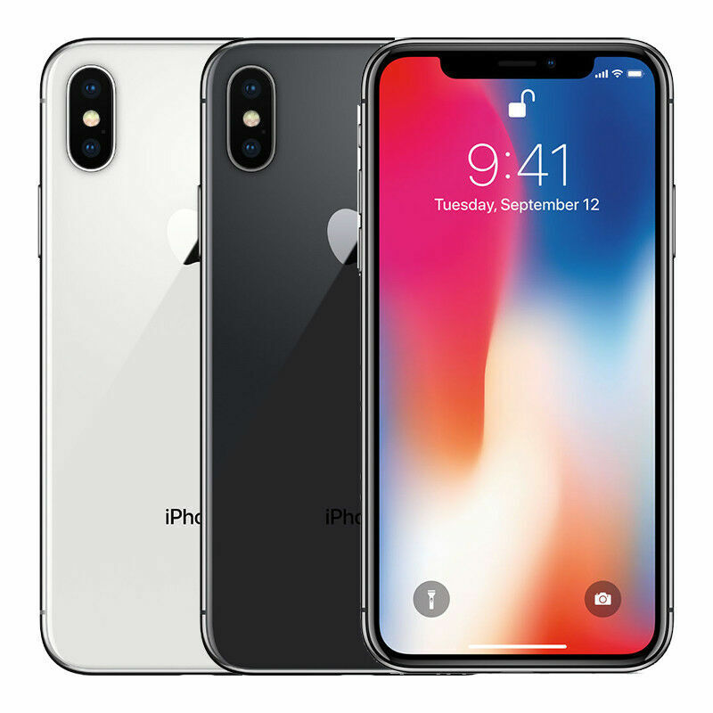
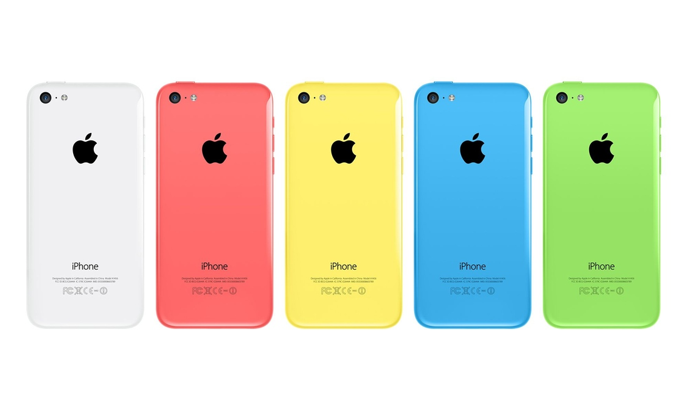
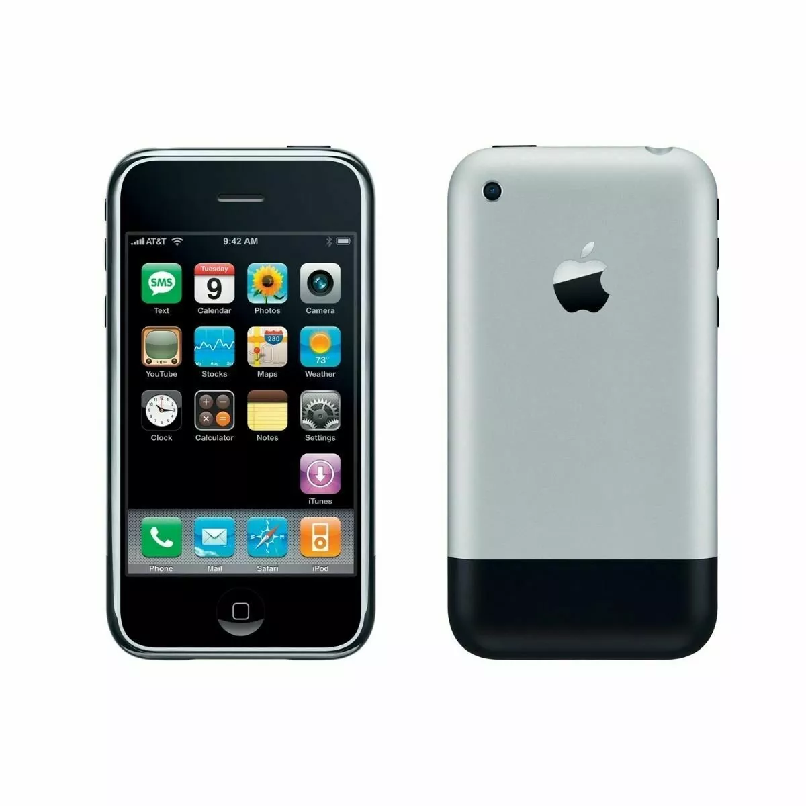

iPhone Models
What is iPhone?
The iPhone is a line of smartphones developed and marketed by Apple that use the company's own iOS mobile operating system. The first-generation iPhone was announced by then–Apple CEO Steve Jobs on January 9, 2007. Since then, Apple has annually released new iPhone models and iOS versions. As of November 1, 2018, more than 2.2 billion iPhones had been sold.
The iPhone was the first mobile phone to use multi-touch technology.[3] Since the iPhone's launch, it has gained larger screen sizes, video-recording, waterproofing, and many accessibility features. Up to the iPhone 8 and 8 Plus, iPhones had a single button on the front panel, with the iPhone 5s and later integrating a Touch ID fingerprint sensor.[4] Since the iPhone X, iPhone models have switched to a nearly bezel-less front screen design with Face ID facial recognition in place of Touch ID for authentication, and increased use of gestures in place of the home button for navigation. Touch ID and the home button are still used for the budget iPhone SE series.
iPhone 16

iPhone 16 Pro features a Grade 5 titanium design with a new, refined microblasted finish. Titanium has one of the highest strength-to-weight ratios of any metal, making these models incredibly strong and impressively light. iPhone 16 Pro comes in four stunning colors — including new Desert Titanium.
Internal design improvements — including a 100 percent recycled aluminum thermal substructure and back glass optimizations that further dissipate heat — enable up to 20 percent better sustained performance than iPhone 15 Pro. So you can do all the things you love — like high-intensity gaming — for longer.
iPhone X
“iPhone X is the future of the smartphone. It is packed with incredible new technologies, like the innovative TrueDepth camera system, beautiful Super Retina display and super fast A11 Bionic chip with neural engine," said Philip Schiller, Apples senior vice president of Worldwide Marketing. “iPhone X enables fluid new user experiences — from unlocking your iPhone with Face ID, to playing immersive AR games, to sharing Animoji in Messages — it is the beginning of the next ten years for iPhone.”
iPhone 5c
The iPhone 5c has the things that made iPhone 5 an amazing phone - and more. Now in White, Red, Yellow, Blue and Green.
iPhone 1
Originally released in 2007, this is now a collector's item.